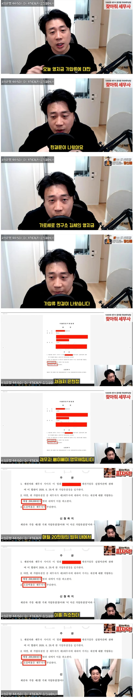
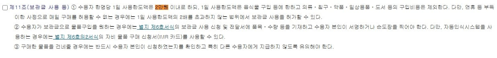

예전에는 영치금이라고 불리던걸 요즘엔 보관금이라고 하는데
장사의신이 영치금 가압류로 안묶었으면
김세의는 영치금 최대 400만원 넣고 매일 2만원까지 사용가능했음
즉 월 60만원을 음식물 구입에 사용할수 있었던것
하지만 장사의신이 김세의의 영치금을 가압류로 묶었고
판결끝에 그래도 재판관이 최소한의 금액은 풀어줘서
김세의는 월20만원, 하루 7천원은 사용할 수 있게 됨
장사의신이 1억 2천만원 영치금 가압류를 넣었고
김세의가 이를 변제하지 못하면
김세의는 월 60만원에서 월 20만원으로 한달 사용금액이 줄어듬
그래고 7천원이면 컵라면에 빵에 멸균우유에 초코바 소시지 까지 먹을수 있겠네
범죄자 새끼들이 물건도 싸게 사네